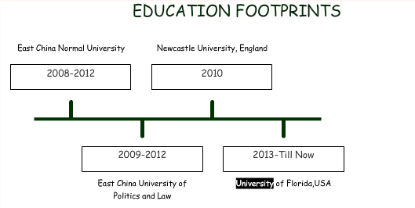

The Dreamer and The Doer
Tian Fang
Through years of self-exploration and attemptsintrospection, I've come to realize my life-long goal of is to working on the promotion and fusion of different cultures. And Ttoo achieve my goal and fulfill my potential, further education through your programs of global communication communication, and culture,, and rhetoric and critical/culture studies is of optimal choice.
Vividly still, I vividly remember sitting on my grandfather’s lap, when I was as a little girl, sitting on my grandfather’s lap, I was told numerous timeslearning the story of Li Hongzhang, a minister in the late Qing Dynasty, who first proposed the theory of the western culture’s communication to China. Although Li failed, due to the corruption of the court, the introductions of different cultures collided and catalyzed a revolution of a dying dynasty. What is moreMoreover, my grandfather, an open-minded and high-heartedgenerous man, introduced me to his large diverse book collection, part of themmany were well-preserved, at the risk of his own life through the cultural revolution. Immersed in such an atmosphere, I grew up to be an inner-directedinquisitive girl with full of dreams, persistence and unyielding naturedetermination.
Thanks to my parents, who have been given me enough freedom and support, I am always in control of my destiny. They respect my decision for to majoring in translation at East China Normal University, which is among the 211 project and 985 985 project key universities in China. In the university studyThere, the course workmy curriculum, , to name a few, coversincludinged translation theory and, cross-culturale studies, , through which I possessgaveiving me a highly structuredvaried range of knowledge and ready for being thegroominged me as a bridge between different cultures. They Coursework seemed relatively easyier to me because of the comprehensive reading and critical thinking skills I have gonegarnered through during my family’s education. As a result, I spend most of my time probing different media of culture introduction and methods of culture’s influence. I divide my time between planning my own course of study and reading references on culture introduction methods, both in English and Chinese. I want to stay current with the latest developments in theory and be immersed myself in the widest range of information possible. That is why I went forchose law as my second major. Studying law greatly broadened my horizons and helped mold my willpowerresolve; what is more more importantly, it helped me to establishhone the a precious ability of analyzingto analyze. It taught me one the bottom line of culture’s fusion, that is that, simple transplantation of other cultures’ production without proper adaptationadequate understanding will go nowhere.
My research capacity is competitive. Apart from winning several scholarships, due to my excellent grades, I was chosen to be one of the very few exchange students to learn study at Newcastle University, where I attended courses of in Media. My analytical writing skills and my unique perspectives were appreciated by my teacher and as a result, my essay score was one of the highest among in the class. What is more, Aas China becomes more and moreincreasingly influential in the world, Chinese culture, bearing its unique imprint of thousands of years of history, will play a more important role in the world as well. My trained specialty in ancient Chinese philosophy and cultural understanding, along with my acquired capacity of synthesizing various opinions will also contribute a lot in the future.